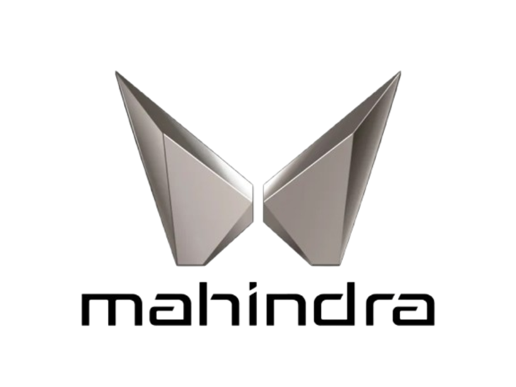

We Make SUVs More Reliable
Then Your Girlfriend

Scorpio N
The Scorpio N has a rugged and commanding road presence. Insides, it offers a premium, spacious, and feature-rich three-row SUV experience, with the Sony sound system and large sunroof adding to its package. Its powerful petrol and diesel engines, seamless automatic gearbox, all wheel drive system make it great for both city and highway drives.Modern Scorpio N beast.Big Daddy

Scorpio
Built by our team of professional developers, we ensure the most rigourous and modern websites. Built from scThe Mahindra Scorpio an icon, a full-size SUV that dominates roads with its presence. Its appeal is not limited to looks, it has spacious front two rows, and a powerful 2.2-litre diesel manual engine that can propel this seven or nine-seat SUV with ease. Its ride is very absorbent and is generally comfortable, making it well suited for both city and highway driving. Og Big Daddy od SUvs